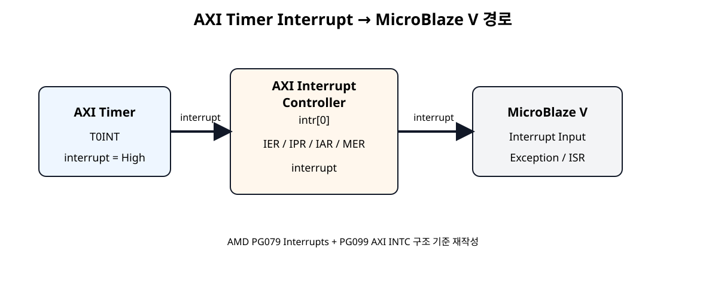
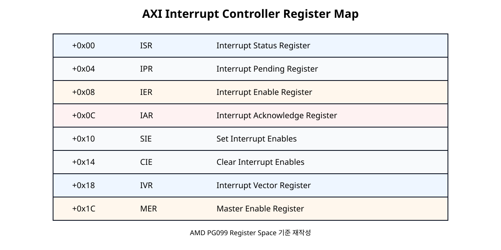
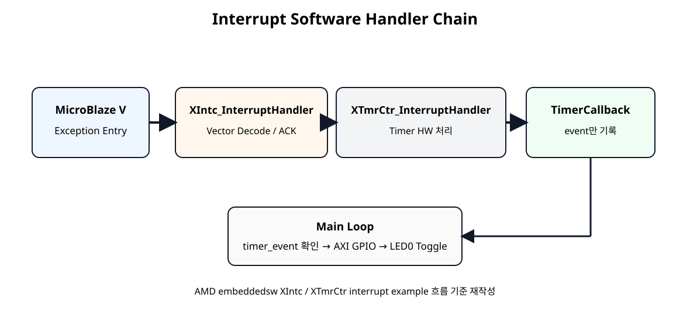

전체 학습 위치
Polling에서 Interrupt로
| SoC 08 Polling | SoC 09 Interrupt |
|---|---|
| CPU가 Timer 상태를 계속 읽음 | Timer가 CPU에 Event를 알림 |
XTmrCtr_IsExpired() 반복 | ISR이 Event 발생 시 호출됨 |
| CPU 시간이 Polling에 사용됨 | 평소에는 Main Code 실행 가능 |
Interrupt: Timer → CPU!
전체 Hardware 경로

원본 보기 ↗
AXI INTC 역할
AXI Interrupt Controller는 여러 Peripheral Interrupt 입력을 받아 하나의 irq 출력으로 Processor에 전달한다.
Timer Interrupt 특성
Timer interrupt 조건이 발생하고 ENIT0가 활성화되어 있으면 interrupt 출력이 High가 된다. T0INT는 1을 써서 Clear할 때까지 유지된다.
Interrupt Type 설정
| 항목 | 설정 |
|---|---|
| Peripheral Interrupt Type | Level |
| Level Polarity | High |
| Processor IRQ | Level-High |
PG099에서 C_KIND_OF_INTR=0은 Level, C_KIND_OF_LVL=1은 Active-High를 의미한다.
AXI INTC 추가
Add IP
AXI Interrupt Controller를 추가한다.
Fast Interrupt
이번 장에서는 사용하지 않는다.
Interrupt Input
현재 Timer 하나이므로 입력 1개를 사용한다.
Timer → INTC 연결
SoC 10에서 여러 Interrupt Source를 합칠 때는 xlconcat 등으로 확장한다.
INTC → MicroBlaze V 연결
CPU는 표준 외부 인터럽트 모드로 설정한다. AXI INTC의 irq를 microblaze_riscv_0/Interrupt에 연결하고 입력은 Level-High로 맞춘다. MicroBlaze V의 mtvec 진입과 mepc 저장·MRET 복귀는 생성 BSP가 처리한다. Xil_ExceptionEnable()은 외부 인터럽트 허용과 전역 허용을 설정하며, ISR은 주변장치의 원인을 해제한다.
AXI 연결
clk_out1 → s_axi_aclk
peripheral_aresetn → s_axi_aresetn
Address Editor
axi_intc_0/S_AXI에 Base Address를 할당한다. 실제 주소는 Vivado Address Editor와 생성된 XSA를 기준으로 한다.
INTC Register Map

원본 보기 ↗
IER · IPR · IAR · MER
| Register | 역할 |
|---|---|
IER | Interrupt Source Enable/Mask |
IPR | Pending Interrupt 확인 |
IAR | 처리한 Interrupt Acknowledge |
IVR | 현재 Interrupt Vector 확인 |
MER | Master IRQ / Hardware Interrupt Enable |
Interrupt ID
#define TIMER_INTERRUPT_ID XPAR_INTC_0_TMRCTR_0_VEC_ID실제 Macro는 Instance 이름에 따라 달라질 수 있으므로 xparameters.h에서 확인한다.
Software Handler Chain

원본 보기 ↗
ISR는 짧게
static void TimerCallback(void *CallBackRef, u8 TmrCtrNumber)
{
(void)CallBackRef;
(void)TmrCtrNumber;
interrupt_count++;
timer_event = 1U;
}Callback은 Interrupt Context에서 실행되므로 event만 기록하고 LED AXI Write는 Main Loop에서 수행한다.
Classic Flow
SDT Flow
status = XSetupInterruptSystem(
&Timer,
(XInterruptHandler)XTmrCtr_InterruptHandler,
Timer.Config.IntrId,
Timer.Config.IntrParent,
XINTERRUPT_DEFAULT_PRIORITY
);SDT Flow에서는 Timer Config의 IntrId와 IntrParent를 사용한다.
Timer 설정 변경
XTmrCtr_SetOptions(
&Timer,
TIMER0,
XTC_DOWN_COUNT_OPTION |
XTC_AUTO_RELOAD_OPTION |
XTC_INT_MODE_OPTION
);Interrupt 프로그램
다음 코드는 AMD의 현재 XIntc/XTmrCtr/SDT Interrupt 흐름을 기준으로 작성한 교육용 예제이다.
#include "xparameters.h"
#include "xtmrctr.h"
#include "xgpio.h"
#include "xstatus.h"
#include "xil_types.h"
#include "xil_exception.h"
#ifdef SDT
#include "xinterrupt_wrap.h"
#else
#include "xintc.h"
#endif
/*
* SoC 09 - AXI Interrupt Controller + AXI Timer
*
* Hardware path:
* axi_timer_0/interrupt
* -> axi_intc_0/intr[0]
* -> axi_intc_0/irq
* -> microblaze_riscv_0/Interrupt
*
* Timer:
* 100 MHz
* 0.5 s interval
* Down Count + Auto Reload + Interrupt
*
* User callback:
* - interrupt_count++
* - timer_event = 1
*
* Main loop:
* - timer_event 확인
* - AXI GPIO LED0 toggle
*/
#define TIMER0 0U
#define LED_CHANNEL 1U
#define LED0_MASK 0x00000001U
#define TIMER_TICKS_500MS 50000000U
#define TIMER_RESET_VALUE (TIMER_TICKS_500MS - 2U)
#ifndef SDT
#define TIMER_DEVICE_ID XPAR_TMRCTR_0_DEVICE_ID
#define GPIO_DEVICE_ID XPAR_GPIO_0_DEVICE_ID
#define INTC_DEVICE_ID XPAR_INTC_0_DEVICE_ID
#define TIMER_INTERRUPT_ID XPAR_INTC_0_TMRCTR_0_VEC_ID
#else
#define TIMER_BASEADDR XPAR_XTMRCTR_0_BASEADDR
#define GPIO_BASEADDR XPAR_XGPIO_0_BASEADDR
#endif
static XTmrCtr Timer;
static XGpio Gpio;
#ifndef SDT
static XIntc Intc;
#endif
volatile u32 interrupt_count = 0U;
volatile u32 timer_event = 0U;
volatile u32 led_state = 0U;
/*
* XTmrCtr_InterruptHandler()가 Timer HW interrupt를 처리한 뒤
* 이 callback을 Interrupt Context에서 호출한다.
*
* ISR/Callback에서는 긴 처리나 출력 작업을 하지 않는다.
*/
static void TimerCallback(void *CallBackRef, u8 TmrCtrNumber)
{
(void)CallBackRef;
(void)TmrCtrNumber;
interrupt_count++;
timer_event = 1U;
}
static int InitGpio(void)
{
#ifndef SDT
return XGpio_Initialize(&Gpio, GPIO_DEVICE_ID);
#else
return XGpio_Initialize(&Gpio, GPIO_BASEADDR);
#endif
}
static int InitTimer(void)
{
int status;
#ifndef SDT
status = XTmrCtr_Initialize(&Timer, TIMER_DEVICE_ID);
#else
status = XTmrCtr_Initialize(&Timer, TIMER_BASEADDR);
#endif
if (status != XST_SUCCESS) {
return XST_FAILURE;
}
status = XTmrCtr_SelfTest(&Timer, TIMER0);
if (status != XST_SUCCESS) {
return XST_FAILURE;
}
XTmrCtr_SetHandler(&Timer, TimerCallback, &Timer);
XTmrCtr_SetOptions(
&Timer,
TIMER0,
XTC_DOWN_COUNT_OPTION |
XTC_AUTO_RELOAD_OPTION |
XTC_INT_MODE_OPTION
);
XTmrCtr_SetResetValue(&Timer, TIMER0, TIMER_RESET_VALUE);
return XST_SUCCESS;
}
static int SetupInterruptSystem(void)
{
int status;
#ifndef SDT
status = XIntc_Initialize(&Intc, INTC_DEVICE_ID);
if (status != XST_SUCCESS) {
return XST_FAILURE;
}
status = XIntc_Connect(
&Intc,
TIMER_INTERRUPT_ID,
(XInterruptHandler)XTmrCtr_InterruptHandler,
(void *)&Timer
);
if (status != XST_SUCCESS) {
return XST_FAILURE;
}
status = XIntc_Start(&Intc, XIN_REAL_MODE);
if (status != XST_SUCCESS) {
return XST_FAILURE;
}
XIntc_Enable(&Intc, TIMER_INTERRUPT_ID);
Xil_ExceptionInit();
Xil_ExceptionRegisterHandler(
XIL_EXCEPTION_ID_INT,
(Xil_ExceptionHandler)XIntc_InterruptHandler,
&Intc
);
Xil_ExceptionEnable();
#else
status = XSetupInterruptSystem(
&Timer,
(XInterruptHandler)XTmrCtr_InterruptHandler,
Timer.Config.IntrId,
Timer.Config.IntrParent,
XINTERRUPT_DEFAULT_PRIORITY
);
if (status != XST_SUCCESS) {
return XST_FAILURE;
}
#endif
return XST_SUCCESS;
}
int main(void)
{
int status;
status = InitGpio();
if (status != XST_SUCCESS) {
return XST_FAILURE;
}
status = InitTimer();
if (status != XST_SUCCESS) {
return XST_FAILURE;
}
status = SetupInterruptSystem();
if (status != XST_SUCCESS) {
return XST_FAILURE;
}
XGpio_DiscreteWrite(&Gpio, LED_CHANNEL, led_state);
/*
* Interrupt path를 모두 준비한 뒤 Timer 시작
*/
XTmrCtr_Start(&Timer, TIMER0);
while (1) {
/*
* Callback은 event만 남긴다.
* 실제 AXI GPIO Write는 Main Context에서 수행한다.
*/
if (timer_event != 0U) {
timer_event = 0U;
led_state ^= LED0_MASK;
XGpio_DiscreteWrite(&Gpio, LED_CHANNEL, led_state);
}
}
return XST_SUCCESS;
}Polling과 비교
| 항목 | SoC 08 | SoC 09 |
|---|---|---|
| Timer 확인 | Main Loop 반복 Read | Interrupt 발생 |
| CPU 진입 | 일반 흐름 | Exception/ISR |
| LED 처리 | Polling 직후 | Callback event → Main 처리 |
실행 순서
Hardware
Timer interrupt → AXI INTC → MicroBlaze V 연결.
Address
AXI INTC Base Address 할당.
Build
Validate → Bitstream → XSA → Vitis Platform Update.
Run
LED0가 0.5초 간격으로 토글되는지 확인.
눈으로 확인하는 결과
| 시간 | interrupt_count | LED0 |
|---|---|---|
| 시작 | 0 | OFF |
| 약 0.5 s | 1 | ON |
| 약 1.0 s | 2 | OFF |
| 약 1.5 s | 3 | ON |
Debugger 확인
| 변수 | 정상 동작 |
|---|---|
interrupt_count | 약 0.5초마다 증가 |
timer_event | ISR에서 1 → Main에서 0 |
led_state | 0 ↔ 1 반복 |
Interrupt 전체 추적
오류 점검
| 증상 | 확인 |
|---|---|
| LED가 안 깜빡임 | Timer→INTC→MicroBlaze V irq 경로 |
interrupt_count=0 | XTC_INT_MODE_OPTION, Vector ID |
| 계속 재진입 | Level-High 설정, Timer Driver ISR 연결 |
| 한 번만 발생 | Auto Reload 설정 |
| Macro 없음 | 최신 XSA/Platform, xparameters.h |
SoC 09 완료 체크리스트
- [ ] AXI Interrupt Controller를 추가했다.
- [ ] Timer interrupt를
intr[0]에 연결했다. - [ ]
irq를 MicroBlaze V Interrupt에 연결했다. - [ ] Timer Interrupt 입력을 Level-High로 설정했다.
- [ ] ISR/IPR/IER/IAR/IVR/MER 역할을 구분한다.
- [ ] Classic XIntc 초기화 흐름을 이해한다.
- [ ] SDT에서
XSetupInterruptSystem()을 이해한다. - [ ]
XTC_INT_MODE_OPTION을 사용한다. - [ ] Callback은 event만 기록한다.
- [ ] LED Write는 Main Context에서 수행한다.
- [ ] 약 0.5초마다 Interrupt와 LED Toggle을 확인한다.
공식 매뉴얼 및 원본 근거
| 문서 | 확인 항목 |
|---|---|
| AMD PG099 · AXI Interrupt Controller v4.1 | Interrupt input/output, Register Map, Level/Edge 설정 |
| AMD PG079 · AXI Timer Interrupts | Timer interrupt Active-High, T0INT |
| AMD embeddedsw · xtmrctr_intr_example.c | Classic XIntc + SDT interrupt flow |
| AMD XTmrCtr Driver API | SetHandler, InterruptHandler, XTC_INT_MODE_OPTION |
| AMD xinterrupt_wrap.c · 2026 | SDT interrupt wrapper |
| AMD Standalone RISC-V · xil_exception.h | RISC-V 외부 인터럽트 등록 API와 XIL_EXCEPTION_ID_INT |